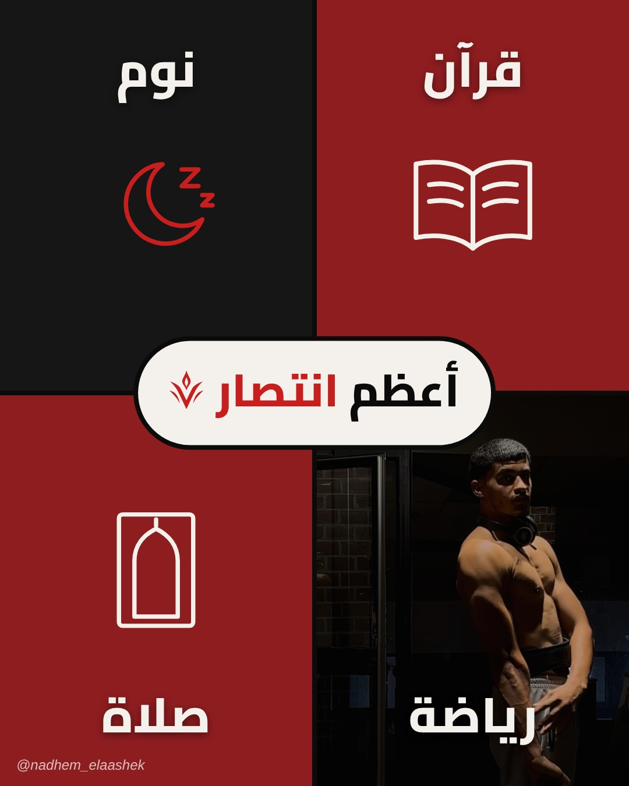

بوست «أعظم انتصار»

تحميل الصورةالكابشن
أعظم انتصار ليس على أحد… بل على نفسك 🤍 أن تقوم للفجر وأنت تريد النوم، أن تفتح المصحف وهاتفك يناديك، أن تتمرّن وأنت متعب، أن تنام مبكرًا لتقوم مبكرًا. أربعة انتصارات صغيرة كل يوم… تصنع منك إنسانًا آخر. ابتداءً من 1 نوفمبر نخوضها معًا في تحدّي «حرب النفس» (21 يومًا، مجانًا). اكتب «حرب» في التعليقات ⚔ اصنع من الألم قوة. #حرب_النفس #VAYNORA #الانضباط #تطوير_الذات